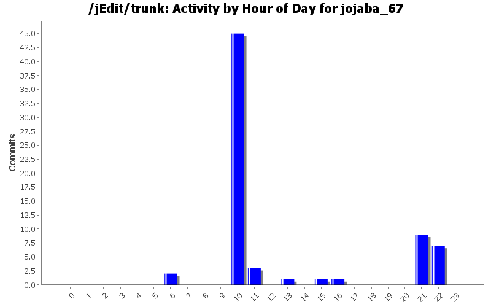
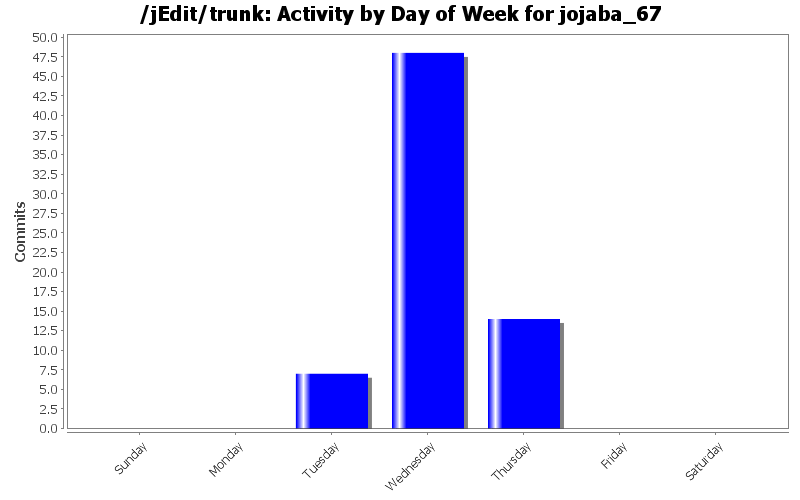
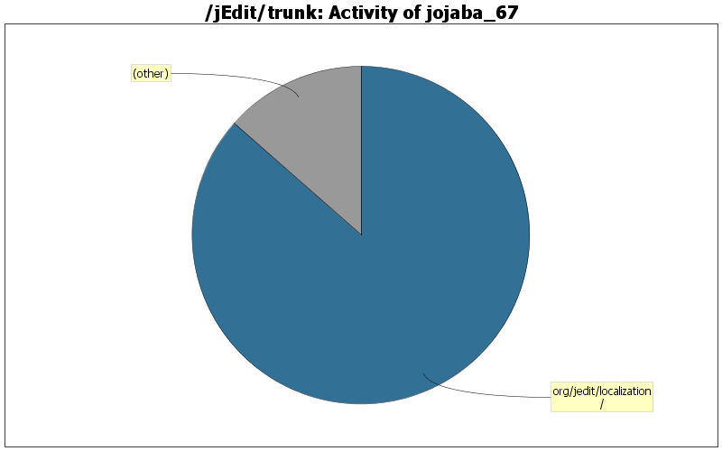

| Directory | Changes | Lines of Code | Lines per Change |
|---|---|---|---|
| Totals | 69 (100.0%) | 3838 (100.0%) | 55.6 |
| org/jedit/localization/ | 16 (23.2%) | 3321 (86.5%) | 207.5 |
| macros/Misc/ | 16 (23.2%) | 153 (4.0%) | 9.5 |
| macros/Editing/ | 7 (10.1%) | 150 (3.9%) | 21.4 |
| macros/Files/ | 8 (11.6%) | 66 (1.7%) | 8.2 |
| macros/Text/ | 10 (14.5%) | 64 (1.7%) | 6.4 |
| macros/Java/ | 5 (7.2%) | 37 (1.0%) | 7.4 |
| macros/Properties/ | 3 (4.3%) | 24 (0.6%) | 8.0 |
| macros/Clipboard/ | 2 (2.9%) | 13 (0.3%) | 6.5 |
| macros/Interface/ | 2 (2.9%) | 10 (0.3%) | 5.0 |

Other uppercase missing in french propertie key fix
2 lines of code changed in 1 file:
Wrong key names (lowercase in uppercase) in some strings in the Text Area pane section of the jedit_fr.props file
5 lines of code changed in 1 file:
added options.status.caret.title translation
1 lines of code changed in 1 file:
Omitted string localization in display abbreviation macro
4 lines of code changed in 3 files:
Adding omitted localization strings, fixing typos and chnaging some translations...
43 lines of code changed in 1 file:
Adding omitted localization strings and removing \n from the localization strings
17 lines of code changed in 1 file:
Adding omitted localization and removing the \n from the localization strings
32 lines of code changed in 7 files:
Translation for added properties of macros and macro titles
275 lines of code changed in 1 file:
Adding Macros properties for almost all macros.
280 lines of code changed in 1 file:
Almost all macros localization.
483 lines of code changed in 45 files:
Adding Macro translation section
153 lines of code changed in 1 file:
Moving lines to the right place and proofreading Macros section.
12 lines of code changed in 1 file:
Adding Macros FR translation (labels ok but properties not yet finished)
224 lines of code changed in 1 file:
Omitted to convert the special chars to unicode.
0 lines of code changed in 1 file:
Upgrading and proofreading the french translation. Adding the english localization.
2307 lines of code changed in 3 files: